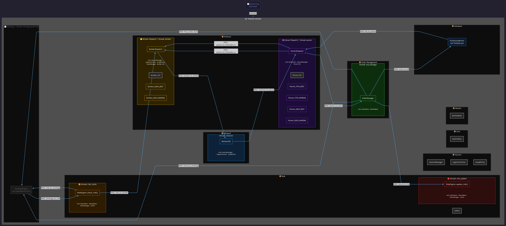

Architecture

Architecture DiagramArchitecture Decision
Unified dispatch over per-protocol pipelines — Parser and builder dispatch units handle all protocol/venue combinations (FIX, OUCH BIST, OUCH NASDAQ, ITCH BIST, ITCH NASDAQ) within a single thread each. The target hardware has 10 cores / 16 threads; each main pipeline stage is pinned to a dedicated core, leaving no headroom for per-protocol pipelines under normal load. Per-protocol class boundaries are kept clean so splitting into independent pipelines later requires minimal structural change.
Threading Model
Each component is pinned to a dedicated physical core with SCHED_FIFO to eliminate scheduling jitter.
| Component | Core | Thread | Policy | Priority |
|---|---|---|---|---|
| Network Rx/Tx | P-core 1 | Thread 0 | SCHED_FIFO | max |
| Parser | P-core 2 | Thread 2 | SCHED_FIFO | max |
| Order Manager | P-core 3 | Thread 4 | SCHED_FIFO | max |
| Strategy | P-core 4 | Thread 6 | SCHED_FIFO | max |
| Builder | P-core 5 | Thread 8 | SCHED_FIFO | max |
| Risk Update | P-core 6 | Thread 10 | SCHED_FIFO | max |
| Risk Check | E-core 7 | Thread 12 | SCHED_FIFO | max |
| Database | E-core 8 | Thread 13 | SCHED_FIFO | max/2 |
| Main | E-core 9 | Thread 14 | SCHED OTHER | default |
Network Design Decision
Network Rx and Tx share a single thread on one P-core. Separating them would require dedicating an additional P-core to Tx — given the limited P-core count, the same loop handles both directions. E-cores were not considered for network due to their lower single-thread performance and cache characteristics.
Risk Check Design Decision
Risk Check is read-heavy — it validates positions and limits without mutating state. With P-cores fully allocated to latency-critical write path components, Risk Check was assigned to an E-core. Its read-only nature makes it tolerant of the lower single-thread throughput of E-cores.
Source Structure
| Module | File | Purpose |
|---|---|---|
| src | TradingEngine.h/cpp |
Engine entry point, thread orchestration |
| src | main.cpp |
Application entry point |
| core | Order.h |
Core order data structure |
| core | HashTables.h/cpp |
Symbol lookup and exec ID dedup |
| core | MessagePool.h |
Preallocated message pool |
| core | MessageWithVenue.h |
Venue-tagged message wrapper |
| core | Protocol-Venue.h |
Protocol and venue enums |
| database | ClickhouseWriter.h/cpp |
Async trade/order logging to ClickHouse (not finished) |
| database | DbTypes.h |
Database type definitions |
| flows | BuilderFlow.h/cpp |
Builder thread loop |
| flows | NetworkFlow.h/cpp |
Network thread loop |
| flows | OrderFlow.h/cpp |
OrderManager thread loop |
| flows | ParserFlow.h/cpp |
Parser thread loop |
| flows | RiskFlow.h/cpp |
Risk thread loop |
| market | MarketBook.h/cpp |
Aggregated order book, atomic best bid/ask |
| network | NetworkIO.h/cpp |
epoll-based non-blocking socket I/O |
| network | NetworkPackets.h |
Packet buffer definitions |
| network | NetworkPendingQueue.h |
Pending packet queue |
| order_management | OrderManager.h/cpp |
Order state management |
| order_management/fillers | FillerFIX.h/cpp |
FIX order fill handler |
| order_management/fillers | FillerITCH_BIST.h/cpp |
ITCH BIST order fill handler |
| order_management/fillers | FillerITCH_NASDAQ.h/cpp |
ITCH NASDAQ order fill handler |
| order_management/fillers | FillerOUCH_BIST.h/cpp |
OUCH BIST order fill handler |
| order_management/fillers | FillerOUCH_NASDAQ.h/cpp |
OUCH NASDAQ order fill handler |
| protocol | Builder_Dispatch.h/cpp |
Builder dispatch and routing |
| protocol | Parser_Dispatch.h/cpp |
Parser dispatch and routing |
| protocol/builders/FIX | Builder_FIX.h/cpp |
FIX 5.0 message serializer |
| protocol/builders/OUCH | Builder_OUCH_BIST.h/cpp |
OUCH BIST message serializer |
| protocol/builders/OUCH | Builder_OUCH_NASDAQ.h/cpp |
OUCH NASDAQ message serializer |
| protocol/parsers/FIX | Parser_FIX.h/cpp |
FIX 5.0 message deserializer |
| protocol/parsers/ITCH | Parser_ITCH_BIST.h/cpp |
ITCH BIST message deserializer |
| protocol/parsers/ITCH | Parser_ITCH_NASDAQ.h/cpp |
ITCH NASDAQ message deserializer |
| protocol/parsers/OUCH | Parser_OUCH_BIST.h/cpp |
OUCH BIST message deserializer |
| protocol/parsers/OUCH | Parser_OUCH_NASDAQ.h/cpp |
OUCH NASDAQ message deserializer |
| protocol/types | FIXMessage.h |
FIX message type definitions |
| protocol/types | ITCHTypes_BIST.h |
ITCH BIST type definitions |
| protocol/types | ITCHTypes_NASDAQ.h |
ITCH NASDAQ type definitions |
| protocol/types | OUCHTypes_BIST.h |
OUCH BIST type definitions |
| protocol/types | OUCHTypes_NASDAQ.h |
OUCH NASDAQ type definitions |
| risk | RiskEngine.h/cpp |
Pre/post trade risk evaluation |
| risk | Limits.h/cpp |
Risk limit configuration |
| session | SessionManager.h/cpp |
Connection and login state |
| session | LoginController.h/cpp |
Login sequence management |
| session | SoupBinTcp.h/cpp |
SBT session layer |
| session | Sequence_FIX.h |
FIX sequence tracking |
| session | Sequence_SBT.h |
SBT sequence tracking |
| utils | Logger.h/cpp |
spdlog-based logging |
| utils | ErrorHandler.h/cpp |
Error handling and recovery |
| utils | Endian.h |
Byte order utilities |
| utils | common.h |
Shared constants and macros |
| utils | config_utils.h/cpp |
Config loading utilities |
Automated Compenents
| Module | File | Purpose |
|---|---|---|
| generated | GeneratedITCHMessages_BIST.h |
Code-generated ITCH BIST messages |
| generated | GeneratedITCHMessages_NASDAQ.h |
Code-generated ITCH NASDAQ messages |
| generated | GeneratedOUCHMessages_BIST.h |
Code-generated OUCH BIST messages |
| generated | GeneratedOUCHMessages_NASDAQ.h |
Code-generated OUCH NASDAQ messages |
| generated | GeneratedSymbolTables.h |
Code-generated symbol tables |
| generated | GeneratedErrorMap.h |
Code-generated error map |
Infrastructure & Tooling
| Module | File | Purpose |
|---|---|---|
| config | Limits.json |
Risk limits per venue and symbol |
| config | Sessions.json |
Session configuration |
| scripts/tools/codegen | GenerateITCHMessages_BIST.py |
ITCH BIST message type generator |
| scripts/tools/codegen | GenerateITCHMessages_NASDAQ.py |
ITCH NASDAQ message type generator |
| scripts/tools/codegen | GenerateOUCHMessages_BIST.py |
OUCH BIST message type generator |
| scripts/tools/codegen | GenerateOUCHMessages_NASDAQ.py |
OUCH NASDAQ message type generator |
| scripts/tools/codegen | GenerateSymbolTables.py |
Symbol table generator |
| scripts/test | run_all_unit_test.sh |
Run all unit tests |
| scripts/test | run_all_bench_test.sh |
Run all benchmarks |
| scripts/test | run_all_perf_test.sh |
Run all perf tests |
| scripts/test | run_all_pipeline_test.sh |
Run all pipeline tests |
| scripts/test | run_all_test.sh |
Run all tests |
| test/unit | — | Unit tests (gtest) |
| test/benchmark | — | Google Benchmark latency tests |
| test/perf | — | Performance stat profiling targets (perf) |
| test/pipeline | — | End-to-end pipeline tests |
| test/data | — | Test datasets |